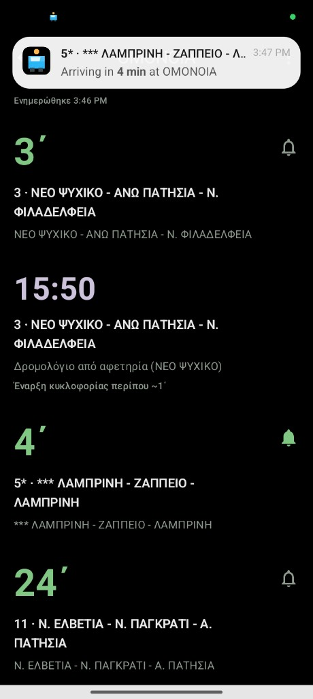
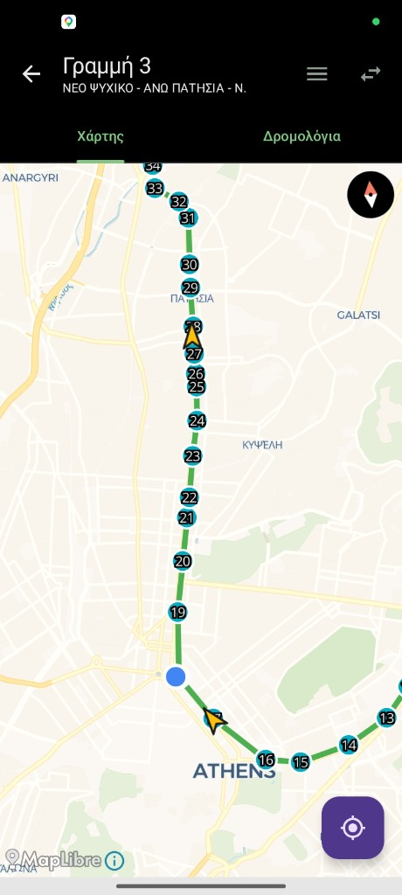

See your bus in under a second. Δείτε το λεωφορείο σας σε λιγότερο από ένα δευτερόλεπτο.
Stasi (Greek Στάση) is a fast, private Android app for Athens public transport—live arrivals that count down between updates, optional arrival alerts, route maps with timetables, and nearby stops. No ads, accounts, or clutter. Greek-first UI with instant English/Greek switching. Η Στάση (Stasi) είναι μια γρήγορη, ιδιωτική εφαρμογή Android για τα μέσα της Αθήνας—ζωντανές αφίξεις με αντίστροφη μέτρηση μεταξύ ενημερώσεων, προαιρετικές ειδοποιήσεις άφιξης, χάρτες δρομολογίων με δρομολόγια και κοντινές στάσεις. Χωρίς διαφημίσεις, λογαριασμούς ή περιττά στοιχεία. Ελληνικό περιβάλλον με άμεση εναλλαγή Αγγλικά/Ελληνικά.
Illustration. Real times come from OASA. Απεικόνιση. Οι πραγματικοί χρόνοι προέρχονται από το OASA.

Built for daily riders Για καθημερινούς επιβάτες
-
Live arrivals Ζωντανές αφίξεις
Favorites and recent stops on Home; big minutes, line ID, and direction. Minutes tick down on the clock between OASA polls so the board never looks frozen. Αγαπημένες και πρόσφατες στάσεις στην αρχική· μεγάλα λεπτά, κωδικός γραμμής και κατεύθυνση. Τα λεπτά μετάνε αντίστροφα μεταξύ ενημερώσεων OASA ώστε ο πίνακας να μην φαίνεται «παγωμένος».
-
Arrival alerts Ειδοποιήσεις άφιξης
Tap the bell on a live row to get a local notification when your bus is within your chosen minutes—countdown, arrived, then left. Optional quiet hours; no push server. Πατήστε το κουδούνι σε μια ζωντανή γραμμή για τοπική ειδοποίηση όταν το λεωφορείο είναι μέσα στα λεπτά που ορίζετε—αντίστροφη μέτρηση, άφιξη, μετά αναχώρηση. Προαιρετικές ώρες ησυχίας· χωρίς διακομιστή push.
-
Search that understands Greek Αναζήτηση που καταλαβαίνει τα Ελληνικά
Fuzzy match ignores accents; Greeklish like “syntagma” maps to Greek. Stop catalog syncs in the background so search is not limited to routes you have already opened. Η ασαφής αντιστοίχιση αγνοεί τόνους· το Greeklish όπως «syntagma» αντιστοιχεί σε Ελληνικά. Ο κατάλογος στάσεων συγχρονίζεται στο παρασκήνιο ώστε η αναζήτηση να μην περιορίζεται σε δρομολόγια που έχετε ήδη ανοίξει.
-
Route map & timetable Χάρτης δρομολογίου & δρομολόγια
All stops on the line with direction, live buses (heading shown), tap a stop for arrivals. Map / Timetable tabs with daily origin and terminus columns. Όλες οι στάσεις της γραμμής με κατεύθυνση, ζωντανά λεωφορεία (με προσανατολισμό), πατήστε μια στάση για αφίξεις. Καρτέλες Χάρτης / Δρομολόγια με ημερήσιες στήλες αφετηρίας και τέρματος.
-
Mid-route context Πληροφορίες στη μέση της διαδρομής
Not at the terminus? See when the next bus leaves from the route origin. Last service warning when the day’s final window is ending soon. Δεν είστε στο τέρμα; Δείτε πότε φεύγει το επόμενο λεωφορείο από την αφετηρία. Προειδοποίηση τελευταίου δρομολογίου όταν κλείνει σύντομα το τελευταίο παράθυρο της ημέρας.
-
Fast & offline-friendly Γρήγορη & φιλική προς offline
Progressive load: cached snapshot first, then fresh data. Smart in-memory caching cuts duplicate API calls; pull-to-refresh on arrivals. Nearby stops by GPS; MapLibre, no proprietary keys. Προοδευτική φόρτωση: πρώτα αποθηκευμένο στιγμιότυπο, μετά φρέσκα δεδομένα. Έξυπνη cache στη μνήμη μειώνει διπλές κλήσεις API· pull-to-refresh στις αφίξεις. Κοντινές στάσεις με GPS· MapLibre, χωρίς ιδιόκλητα κλειδιά.
Screenshots Στιγμιότυπα

Tech stack Τεχνολογίες
- Kotlin, Jetpack Compose, Material 3 · MVVM & repository pattern
- Kotlin, Jetpack Compose, Material 3 · MVVM & repository pattern
- Retrofit, Room, DataStore · WorkManager (arrival alerts) · MapLibre SDK
- Retrofit, Room, DataStore · WorkManager (ειδοποιήσεις άφιξης) · MapLibre SDK
- Data from OASA Telematics API (POST endpoints); per-endpoint rate limits and layered caching
- Δεδομένα από το OASA Telematics API (POST endpoints)· όρια ρυθμού ανά endpoint και πολυεπίπεδη cache
Details and acceptance criteria are in the project specification. Λεπτομέρειες και κριτήρια αποδοχής βρίσκονται στις προδιαγραφές του έργου.
Privacy Απόρρητο
No analytics or crash reporting. Location is used for nearby stops and your position on the map when permitted; it is not stored. Arrival alerts run entirely on-device (WorkManager polling + local notifications)—no accounts, no push server. Privacy policy · spec Χωρίς analytics ή αναφορές σφαλμάτων. Η τοποθεσία χρησιμοποιείται για κοντινές στάσεις και τη θέση σας στον χάρτη όταν επιτρέπεται· δεν αποθηκεύεται. Οι ειδοποιήσεις άφιξης τρέχουν εξ ολοκλήρου στη συσκευή—χωρίς λογαριασμούς ή διακομιστή push. Πολιτική απορρήτου · προδιαγραφές